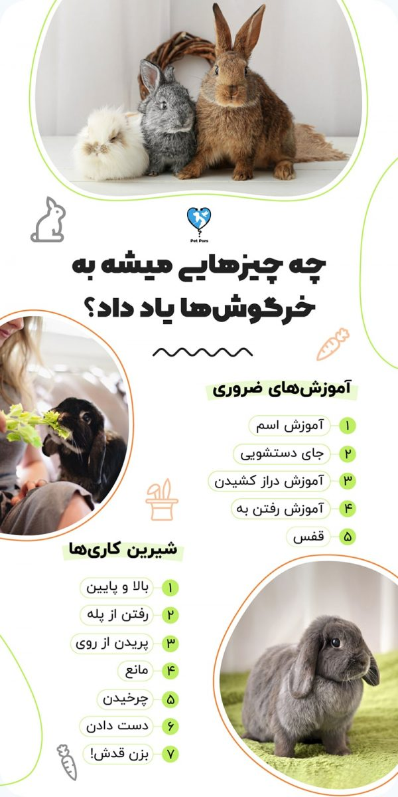
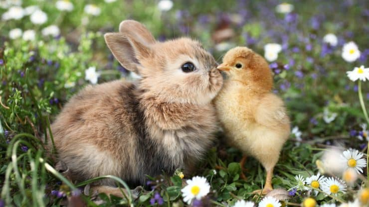
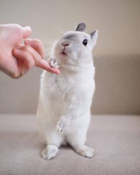

خرگوشها حیوانات خانگی ساکت، کم هزینه و مظلومی هستن و برای همین هم خیلی زیاد طرفدار دارن. البته ساکت و خجالتی بودن بیش از حد اونها شاید این اشتباه رو به وجود بیاره که آموزش و تربیت خرگوش امکان پذیر نیست! در صورتی که این فقط سگها نیستن که میتونن تربیت بشن و دستورات رو اجرا کنن.
خرگوشها میتونن اسمشون رو متوجه بشن، جای دستشوییشون رو یاد بگیرن و اگر کار اشتباهی انجام میدن (مثلا جویدن چیزی یا گاز گرفتن صاحب) برای انجام ندادنش آموزش ببینن.
اگر تربیت خرگوش براتون جذابه و دوست دارید امتحانش کنین در ادامه مقاله با پت پرس همراه باشید.

یاد بگیرید هر رفتار خرگوش چه معنایی داره؟
برای اینکه خرگوشتون رو راحت تر تربیت کنید باید اول یاد بگیرید هرکارش چه معنایی داره. اینطوری میتونین بفهمین حس و حال خرگوش چه جوریه و آیا علاقه ای به تمرین داره؟ آیا خسته است؟ آیا خوشحال یا عصبانیه؟
برای یادگیری رفتارشناسی خرگوش مقاله مرتبط رو در پت پرس مطالعه کنید.
آیا تربیت خرگوش برای یادگیری نامش امکان پذیره؟
مشخصه که سگ ها و گربه ها اسمشون یاد می گیرن، ولی خرگوش ها چطور؟ تعداد زیادی از صاحبان این حیوون خونگی باور دارن که خرگوش ها اسمشون رو میشناسن و می تونن چندتا لغت معمولی و آشنا رو هم درک کنن.
البته از نظرعلمی هم این قضیه ثابت شده. خرگوش ها می تونن اسمشون رو یاد بگیرن و حتی می تونن وقتی صداشون میکنین به سمتتون بیان. اونا قادرت تعدادی لغت ساده و کوتاه دیگه رو هم متوجه بشن. بعضی خرگوش ها باهوش تر از بقیه هستن و می تونن لغت های بیشتری یاد بگیرن.
دوست داری خرگوشت رو تربیت کنی؟
تربیت خرگوش ها کاری لذت بخش و جالبه ولی هرکسی بلد نیست اون ها رو درست آموزش بده.
اون ها میتونن شیرین کاری هایی مثل پریدن از روی مانع، دست دادن، غلت زدن، رفتن توی قفس، دستشویی کردن در جای مشخص و کلی چیزهای دیگه رو یاد بگیرین به شرطی که درست آموزششون بدید، زبونشون رو بلد باشید و کاری کنید که بهتون اعتماد کنن.
اگر دوست دارید خرگوشتون رو آموزش بدید، ایبوک تربیت و دستی کردن خرگوش رو دانلود و مطالعه کنید.
این ایبوک آموزش و تربیت خرگوش ها نوشته شده. بخونش، به کارهاش عمل کن و ببین خرگوشت چه جوری با هوشش و مهارت های که یاد میگیره، شگفت زده ات میکنه🤩 کلی هم بازی در این کتاب یاد دادیم که با انجامشون از وقت گذرونی با خرگوشت کلی لذت میبری.
آیا اگر هر کسی خرگوش رو صدا کنه اون واکنش نشون میده؟
در صورتی که خرگوش بدرستی تربیت شده باشه وقتی اسمش رو می شنوه واکنش نشون میده ولی بعضی خرگوش ها فقط به سمت شما و سایر اعضای خانواده تون میان و بعضی دیگه به طرف هر کسی که اسمشون صدا بزنه میرن. این بیشتر به شخصیت اون بستگی داره تا به تربیت خرگوش.
آموزش اسم به خرگوش چقدر طول میکشه؟
عوامل زیادی رو باید در این مورد در نظر گرفت، همونطور که بیشتر صاحبان خرگوش هم می دونن، همه خرگوش ها شبیه هم نیستن. چندتا نکته اصلی وجود داره که روی زمان یادگیری اون ها اثر میذاره.
۱-شخصیت خرگوش
اولین چیزی که باید در نظر داشته باشین اینکه هر خرگوش شخصیت خاص خودش رو داره. اگر خرگوش شما لجبار باشه در نتیجه تربیت خرگوش بیشتر از تربیت اون هایی طول می کشه که دوست دارن صاحبشون رو خوشنود کنن.
۲-هوش خرگوش
عامل خیلی مهم بعدی هوشه، قصدم بی ادبی نیست ولی بعضی خرگوش ها باهوشتر از بقیه هستن. این یه واقعیته و مسلما تربیت خرگوش باهوشتر راحت تره و زودتر یاد می گیره که اسمش رو یاد بگیره و وقتی بهش واکنش نشون داد و جایزه گرفت، بفهمه که این جایزه برای چی بوده!
بنا به گزارش سایت treehugger:
خرگوش بلژیکی، خرگوش بومی بلژیک هست که در اوایل قرن ۱۷ از بلژیک به آمریکا برده شده است. این نژاد علاوه بر ظاهر متفاوتش، به داشتن هوش بالا معروفه. این نژاد بسیار بازیگوشه و سرعت یادگیری بالایی داره.
ما توی مقاله انواع خرگوش راجع به نژادهای خرگوش خانگی محبوب، ویژگیهای ظاهری و رفتاری، تفاوتها و حتی نگهداری آنها صحبت کردیم؛ پیشنهاد میکنم حتما مطالعه کنین.

۳-تداوم در تربیت
اینکه چقدر با خرگوش برای یادگیری اسمش کار می کنین در سرعت تربیت خرگوش و یادگیری اش خیلی مهمه. بعنوان مثال حتی اگه به لجبازترین خرگوش ها هم هر روز تمرین بدین خیلی سریعتر اسمشون یاد می گیرن.
۴-ایجاد انگیزه کافی برای یادگیری
هر چی انگیزه بیشتری برای خرگوش درست کنین، مثلا با دادن جایزه مورد علاقه اون یا نوازش اسمش سریعتر یاد میگیره.
۵-اسم خرگوش
بعضی از خرگوش ها نمی تونن اسم های دوسیلابی یاد بگیرن و براشون خیلی سخت تره. اسم های تک سیلابی آسونتر در خاطرشون میمونه. اگه میخواین اسم بامزه برای خرگوشتون پیدا کنین که یادگیریش راحت باشه و قشنگ هم باشه، پیشنهاد میکنیم که حتما یه سری به مقاله اسم خرگوش بزنید.

چگونه به خرگوش اسمش رو یاد دهیم؟
آموزش اسم به خرگوش می تونه یه چالش باشه ولی سرگرم کننده و لذت بخشه. سعیتون رو بکنین.
- اول از همه اینکه اسم خرگوش باید ساده و تک سیلابی باشه. بعضی از خرگوش ها در بخاطر آوردن اسمهای دو سیلابی مشکل دارن.
- در حالیکه به آرومی خرگوشتون نوازش می کنین اسمش رو پشت سر هم تکرار کنین. می تونین هر از چندگاهی یه خوراکی کوچیک بعنوان جایزه بهش بدین تا حواسش به شما باشه.
- وقتی آروم و کاملا راحت بود، بذارینش روی زمین و چند قدمی ازش دور بشین. اسمش صدا کنین و خوراکی توی دستتون تکون بدین، این باعث میشه بدو بیاد سمتتون.
- مرتب این تمرین رو باهاش تکرار کنین و همیشه بخاطر اومد پیشتون بهش جایزه بدین. بزودی خرگوشتون اسمش و جواب دادن با به اون با مفهوم و احساس خوب نوازش شدن و جایزه گرفتن یه خوراکی خوشمزه همراه میکنه.
هوش خرگوش چقدره؟
به این اشاره شد که برای خرگوش ها هوش یه عامل مهم در یادگیری اسمشونه ولی به طور کلی هوش خرگوش ها چقدره؟
هر کس که بیش از یک ماه با یه خرگوش زندگی کرده باشه می فهمه که اونا چقدر باهوشن. در عین حال تربیت خرگوش ها امکان پذیره و اونا میتونن به دستورها عمل کنن. خرگوش ها حتی دوست دارن معما حل کنن! مثلا من یه خوراکی کوچیک داخل یه اسباب بازی یا زیر پتو قایم می کنم و می ذارم خرگوشم پیداش کنه. یه نکتهی دیگه وابسته کردن اونا به خودتونه، خرگوشها حیوونای فوق العاده اجتماعی هستن و به راحتی با اعضای خونواده یا حیوونای دیگه ارتباط میگیرن و این نکته مهمیه. اگه بتونین باهاش رفتار درستی داشته باشین و ارتباط خوبی بینتون برقرار شه از هوش زیاد این حیوون در راستای آموزشهای مختلف به راحتی میتونین کمک بگیرین. اگه هنوز ارتباط خوبی با خرگوشتون نگرفتین، پیشنهاد میکنم مطلب چگونه خرگوش را وابسته کنیم رو بخونین.  تقریبا تعداد لغاتی که خرگوش ها می تونن یاد بگیرن نامحدوده، ولی باید لغت هایی که می خواین بهش یاد بدین رو با دقت انتخاب کنین. اگرچه اونا می تونن زبون انسان ها رو یاد بگیرن ولی در بهترین حالت میتونن تعداد کمی لغت رو بخاطر بسپرن، پس روی لغت هایی که باعث میشن بتونین ارتباط بیشتری با خرگوشتون برقرار کنین متمرکز بشین. اینا معمولیترین لغاتی هستن که در ابتدا به خرگوش یاد میدن. خرگوش شما ممکنه بتونه بیشتر یاد بگیره. سعیتون بکنین! خرگوش ها دوست دارن هر کاری که می خوان انجام بدن و گاهی درست مثل گربه ها به حرفهای صاحبشون گوش نمیدن. پس هر از چند وقتی لازمه بهشون یادآوری بشه که چطوری رفتار کنن. بخاطر داشته باشین لازم نیست خرگوشتون رو تنبیه کنین، فقط باید رفتار درست بهش یاد بدید و برای این موضوع آموزش نظم و تربیت خرگوش لازمه. تنبیه کردن میتونه منجر به قهر کردن خرگوش بشه پس به هیچ وجه به فکر تنبیه کردنش نباشید وگرنه منتظر کینه توزی اون باشین.  وقتی خرگوش کارهایی می کنه که نباید انجام بده، خیلی محکم و قاطع اسمش صدا کنین و بهش بگید “نه! “. در این حالت توی چشماش نگاه کنین، آروم باشین و صداتون بلند کنین ولی داد نزنید. مثلا وقتی داره جایی رو می کَنه یا میجوه که نباید، مستقیم توی چشماش نگاه کنین و اسمش صدا کنین و بگید “نه! “. بعد چیزی در اختیارش بذارین که بتونه بجوه. اینطوری توجه ش رو به سمت دیگه ی می برید و بهش یاد میدید که چه کاری درسته و چه کاری غلط. در حالیکه اسمش رو صدا می کنین و بهش میگین “نه!” انگشت اشاره تون رو روی بینی اش بگذارید و قاطعانه ولی به آرامی اون رو به سمت پایین فشار بدید. این باعث میشه که بفهمه از رفتارش خوشتون نیومده و در رابطه شما و اون اختیار کارا دست شماست و شما تسلط دارید. اگه بعد از چندبار گفتن ” [اسم خرگوش] ، نه!” بازم بهتون گوش نداد برای اینکه بهش بفهمونین کارش رو تایید نمی کنین برای ۱۰ دقیقه توی قفس یا لونه اش زندونیش کنید. خرگوش ها حیواناتی اجتماعی هستن و دوست ندارن تنها باشن، برای چند دقیقه جدا کردنشون از سایرین کمک می کنه بفهمن، نتیجه گوش نکردن به “نه!” تنها شدنه.
گاهی اوقات که خرگوش یه چیزی می خواد یا قصد جلب توجه داره گازتون می گیره. وقتی این کار رو می کنه چه گاز کوچیکی در حد دندون زدن باشه و چه یه گاز واقعی، برای جلوگیری از انجام مجددش، با صدای نازک جیغ بکشین. این کار به صورت غریزی بهش می فهمونه به شما آسیب رسونده و نباید این کار می کرده و بعدا هم نباید بکنه. نکته: کارهایی که در تربیت خرگوش نباید انجام بدید. شاید براتون عجیب باشه که این آموزش رو هم میتونین به خرگوش یاد بدین، اما با یاد دادن این آموزش، نگهداری خرگوش براتون خیلی راحتتر میشه. مخصوصا برای خرگوشهای نر که عادت دارن توی گوشههای خونه، ادرار یا مدفوع کنین و از طرفی با این کار تعیین قلمرو هم میکنن. برای این آموزش بهتره جعبه دستشویی براش بخرین و براش شرایط جذابی ایجاد کنین تا راحتتر یاد بگیره. توی جعبه دستشویی علف خشک خوشمزه بذارین و اونو توی سه کنج خونه بزارین، دقیقا جایی که خرگوش عادت داره، مدفوع کنه تا کم کم عادت کنه، توی جعبه دستشویی، کارشو انجام بده. حتما برای یادگیری کامل تربیت خرگوش برای دستشویی پیشنهاد میکنیم حتما مطلب آموزش دستشویی به خرگوش رو بخونین. برای اینکه مطمئن بشین خرگوش همیشه هوشیاره و میتونه به آموزش های شما توجه نشون بده، باید اول از همه از سالم بودنش اطمینان پیدا کنین. برای این کار باید غذای مناسب بهش بدید. مثلا خیلی ها نمیدونن که دادن هویج، سبزیجات و غذاهای نرم به خرگوش بسیار براش مضره. برای آگاهی از نگهداری درست از خرگوش، مقاله نگهداری از خرگوش رو مطالعه کنید. خرگوشهای خونگی به شدت حیوونای باهوش و تربیت پذیری هستن، ولی چون معمولا ساکت و خجالتین، خیلی از صاحبای اونا، کلا به فکر تربیتش نمیوفتن. خرگوشها خیلی سریع یاد میگیرن که نسبت به صداها و بوهای مختلف چه عکس العملی باید نشون بدن و این دلیل خوبیه که با یه تشویقی خوشمزه زمان کافی رو برای آموزش اون بزارین. تا حالا به فکر تربیت خرگوش خودتون بودین؟ از تجربیاتتون برامون بگین، چه شیرینکاریای بهش یاد دادین و چقد طول کشید تا یاد بگیره؟چه لغاتی به خرگوشتون یاد بدید؟
فرمانهایی که در آموزش خرگوش استفاده میشن
نحوه تربیت خرگوش برای انجام ندادن بعضی از رفتارها
۱-منع با استفاده از صدا
۲-با فشار دادن بینی به سمت پایین
۳-با تنها گذاشتن خرگوش
۴-تربیت خرگوش برای جلوگیری از گاز گرفتن!
آموزش دستشویی به خرگوش
خرگوشهای سالم سریع تر آموزش میبینن!

جمع بندی
سلام،وقتتون بخیر ،آموزش هایی که گذاشتید فقط برای خرگوش های نژاد هست یا خرگوش های عادی رو هم میشه تربیت کرد؟
سلام کیانا جان،
برای هر خرگوشی مناسبه و مختص یک نژاد نیست.
خرگوشم خیلی دستشویی میکنه باید چکار کنم؟
سلام چجوری نر و مادگی خرگوش رو تشخیص بدن؟؟
سلام من یه خرگوش دارم تا دست میبریم تو خونش خنجم میزنه و دندون میگیره. چکار کنم؟
سلام آرتین عزیز،
معمولا خرگوش ها نسبت به متعلقاتشون مثل خونه، اسباب بازی و غذا حساسن و اجازه نمیدن نزدیکشون بشین. ترجیحا مواقعی که لازمه دست توی خونش ببرین برای تعویض آبو غذا باشه فقط و دستکش دستتون کنین که اگه اونموقع هم حمله کرد دستتونو عقب نکشین وگرنه یاد میگیره و این رفتارش شدت پیدا میکنه.
سلام ببخشید من یه خرگوش لوپ میخوام بخرم میشه بگین شناسنامه اش رو از کجا گیر بیارم؟
سلام پانیذ جان،
کلینیکا و بیمارستانای معتبر شناسنامه ارائه میدن بهتون. ممکنم هست خود فروشنده شناسنامه ای ازش داشته باشه ولی بعید میدونم.
خیلی خیلی ازتون ممنونم❤
سلام و تشکر از اطلاعات خوب سایتتون.
من یه خرگوش کوچیک خریدم که گفتن موزاییکی هست و نیازی به اب نداره و زیاد بزرگ نمیشه ایا درسته؟
و سوال دوم. خرگوشم وقتی میخواد دسشوییشو انجام بده میپره و باعث میشه مدفوعش از قفس بیفته بیرون چیکار باید بکنم؟
سلام علیرضای عزیز،
بسته به اینکه چه نژادی تهیه کردین ممکنه یکم اندازش بزرگ بشه یا نه. میتونین برای تعیین نژاد عکسش رو برامون از طریق مشاوره آنلاین، واتساپ یا تلگرام ارسال کنین:
با مشاوره دامپزشکی آنلاین کنار شما هستیم (سوال مستقیم و تخصصی از دامپزشکان پت پرس)
تلگرام: ۰۹۹۸۱۱۹۸۰۸۷
واتساپ: ۰۹۰۳۱۷۴۶۹۳۹
اینکه گفته میشه خرگوش نیاز به آب نداره کاملا اشتباهه. خرگوش هم مثل هر حیوون خونگی دیگه نیاز به آب داره و باید همیشه در دسترسش باشه. میتونین محل دستشوییش رو محصور و محدود کنین و آموزش دستشویی براش انجام بدین. این کتاب میتونه راهنماییتون کنه:
ایبوک راهنمای تربیت و دستیکردن خرگوش + بررسی مشکلات رفتاری
سلام من یه خرگوش نر یه ماده دارم الان ماده بار داره بهش پلت یونجه دار می دم ولی کم و بیش هم انواع کلم ها هم میدم میخوام ببینم این غذا هایی که میدم خوبه
یا اگه خوب نیست چی بهش بدم
محمدمسیح عزیز،
مصرف صرفا پلت گزینه ی خوبیه خصوصا اگه خرگوشتون تو روزای ۲۱-۱۴ بارداریش باشه. میتونین درکنارش تو دوره ی شیردهیش از یک قاشق چایخوری تخمه آفتابگردان سیاه یا حتی جودوسر استفاده کنین که برای تامین چربی های بیشتر کمک کنندس.
سلام من تازه خرگوش خریدم و میخوام بدونم چطوری بهش عادت بدم که کجا دسشویی کنه
لطفا بگید ممنون ❤️
سلام امیرمحمد عزیز،
معمولا چون خرگوشا خیلی تمیزن و به نظافتشون اهمیت میدن درصورتی که براش ظرف مخصوص دستشویی درنظر بگیرین سریع ازش استفاده میکنه.
برای داخل قفس یه محدوده ای رو برای ظرف دستشویی قرار بدین و فقط توی ظرفش مواد جاذب دستشویی رو استفاده کنین که کل قفس رو برای دستشویی کثیف نکنه (خرگوشا تمایل دارن روی مواد جاذب دستشویی کنن و موارد توصیه شده و ایمنش شامل مواد ارگانیک مثل کاغذ های بازیافت شده و خمیر کاغذ، و خاک اره ی فشرده شده و حالت پلت هستش)
چندتا نکته ی مهمی که باید درنظر بگیرین اینه که در کنار جای دستشوییش خرگوش باید به یونجه دسترسی داشته باشه (اینکه دقیقا یونجه رو کجا قرار بدین بسته به نظر خودتونه ولی جوری باشه که راحت درکنار جای دستشویی یونجه همون نزدیکیا باشه فقط دقت کنین که اگه یونجه قراره گوشه ای از ظرف دستشویی باشه حتما خشک بمونه و آلوده نشه) دومین نکته اینه که خرگوشا زمان زیادی رو میتونن توی این محل بگذرونن و مشکلی نیست و درنهایت اینکه وقتی میخواین ظرفو تمیز کنین صرفا مدفوعشو جمع کنین و کامل ظرفشو نشورین چون از ادرارشون برای قلمروگذاری اونجا استفاده میکنن و کامل تمیز کردنش میتونه به خرگوش استرس وارد کنه. (نگران نباشین ادرارش بوی خاص و زننده ای برای ماها نداره ولی برای یه خرگوش دیگه چرا!)
خیلی ممنون❤
فقط خرگوش لوپم آبریزش بینی داره
حالش خیلی خوبه،فقط آبریزش بینی داره.
مشکلی داره بنظرتون؟
سلام ببخشید من میخواستم بدونم که تو چه سنی به خرگوش باید تربیت یاد بدهیم ؟
سلام ستایش جان،
یکم خرگوشتون بزرگ شده باشه، حدود یکو نیم دوماهگی میتونه مناسب باشه. زودترم میشه ولی گفته میشه یه مقدار سختتره چون بازیگوشن.
سلام من دوتا خرگوش نر دارم
خیلی غذا میخورن
مثلا یه بسته کامل پلت رو توی ۱۵ روز تموم میکنن
یونجه ام میخورن ولی پلت خیلی بیشتر دوست دارن
باید چی بهشون بدم غیر از پلت و یونجه؟
سلام حسنا جان،
مصرف پلت نسبت به کاه و یونجه باید خیلی محدود و کنترل شده باشه. درواقع بیشترین قسمت غذاشون باید کاه و یونجه باشه چون به ساییدن دندون و سیستم گوارشیشون سازگار تره توصیه میکنم به مصرف بیشتر کاه و یونجه عادتشون بدین و مصرف پلت رو پایین تر بیارین.
برای اطلاعات بیشتر درباره ی خوراکیایی که میتونین در اختیارشون بذارین پیشنهاد میکنم مقاله ی زیر رو مطالعه کنین:
هر آنچه باید در مورد نگهداری خرگوش خانگی بدانید (خرگوش لوپ،نگهداری ازخرگوش،…)
سلام
من تو یه سایت خوندم که گفته بود اصلا به خرگوشتون کلم پیچ ندین
این مطلب درسته?
و اینکه من میخوام یه خرگوش بخرم چه نژادی رو پیشنهاد میکنید؟هم از لحاظ طول عمر و هم سلامتیشون
و میخواستم بگم که میخوام اسمشو «کوکی»بزارم
ایرادی نداره?
سلام رویا جان،
کلم جز مواردیه که خیلی کم باید به خرگوشتون بدین. علتش در این مقاله ذکر شده: راهنمای غذای خرگوش + انواع یونجه، پلت و سبزیجات مفید!
معمولا نژادای کوچیکتر گفته شده عمر طولانی تری دارن ولی قسمت زیادیش به نحوه تغذیه و نگهداری شما هم داره. خیر ایرادی نداره. البته گفته شده اسم تک سیلابی بذارین یاد گرفتنش براشون راحتتره ولی دوسیلابی هم مشکلی نداره.
من برای بار اولم یک خرگوش خریدم . اون دائما با دستاش جای بینی اش رو میخارونه این از علائم بیماری هستش آیا؟
بعد اون هیچ توجهی به من نداره😐
این بی توجهی هم باعث شده که بیشتر اوقات تو قفس باشه بیرونم که میاد دائما داره کنجکاوی میکنه و اینور و اونور میپره …ولی نمیشه باهاش بازی کنم…
نه میاد سمتم نه میزاره نازش کنم … میپره عقب … ولی اصلا نه تا حالا ناخون کشیده نه گازم گرفته … چیکار کنم بهم عادت کنه؟
اون علاقه داره به خوردن برگ درخت شاه توت این براش مضر نیست؟
سلام یاسمن جان،
خیر موقع نظافت اینکارو انجام میدن. عادت کردن خرگوش بهتون یه مقدار زمان میبره و لازمه تا جای ممکن کاریش نداشته باشین تا خودش بهتون نزدیک شه. بهتره برگ درخت بخاطر احتمال سمپاشی مصرف نشه، سبزیای متنوع دیگه ای خاصیت دارن براش رو امتحان کنین. این مقاله و کتاب میتونن کمکتون کنن:
راهنمای غذای خرگوش + انواع یونجه، پلت و سبزیجات مفید!
ایبوک راهنمای تربیت و دستیکردن خرگوش + بررسی مشکلات رفتاری
سلام میخواستم بدونم میشه سگ و خرگوش رو باهم نگهداری کرد
سلام دوست عزیز،
میشه نگهداری کرد ولی لازمش یه دوره ی شاید طولانی معرفی و عادت کردن بهم هستش.
چون سگ ذاتا شکارچی و خرگوش ذاتا طعمه هست توی طبیعت واسه همین هم ترس خرگوش باید بریزه و محیط لازم برای پناه گرفتنش فراهم بشه هم سگ باید تربیت بشه و فرمان پذیر باشه تا زیاد باعث آزار و مزاحمت خرگوشتون نشه.
پس قسمت مهم ماجرا تربیت و فرمان پذیر کردن سگ هستش که پیشنهاد میکنم برای راهنمایی بیشتر و کاملتر کتاب یا ویدیوی زیر رو دنبال کنین:
راهنمای جامع تربیت سگ ، از تولگی تا بزرگسالی
ویدیو آموزشی تربیت سگ (۱۱ قسمت کامل)
سلام ببخشید من یه خرگوش ماده ی حدود تقریبا ۳.۴.۵ ساله دارم که با حساب امروز ۳ روزه دارمش و میخوام که منو بشناسه و به سمتم بیاد و ازم نترسه در ضمن یه اسم هم روش گزاشتم که فقط با اون اسم صداش میکنم اسمش هست ژیکو وقتی صداش میکنم هیچ واکنشی نشون نمیده و وقتی یه خوراکی رو یه جای یکم دور از دسترسش میزارم نمیره پیداش کنه و من حتما باید اونو بیارم کنار دهنش لطفا تو این مشکل هایی که گفتم کمکم کنید چند مشکل دیگه هم دارم که فعلا به ذهنم نمیرسن. با تشکر🙏🏻💙
سلام یاسین عزیز،
یه مقدار آموزش دادن به خرگوش نیاز به زمان گذاشتن و صبوری داره. میتونین برای راهنمایی بهتر این کتاب رو مطالعه کنین:
ایبوک راهنمای تربیت و دستیکردن خرگوش + بررسی مشکلات رفتاری
سلام ببخشید من یه خرگوش دارم که حس میکنم دستکش یه چیزی شده چون هر موقع میام بهش غذا بدم دستاش رو یه جوری میکنه تکان میده بالا میگیره و لیس میزنه و باعث آزارش هست میشه لطفا کمک کنید
سلام آرینا جان،
ممکنه صرفا مربوط به نظافت کردنش باشه. اگه فکر میکنین باعث آزارش شده و میخواین پیگیری کنین میتونین عکس و فیلم این حرکتش رو برامون از طریق مشاوره آنلاین ارسال کنین تا راهنماییتون کنیم:
با مشاوره دامپزشکی آنلاین کنار شما هستیم (سوال مستقیم و تخصصی از دامپزشکان پت پرس)